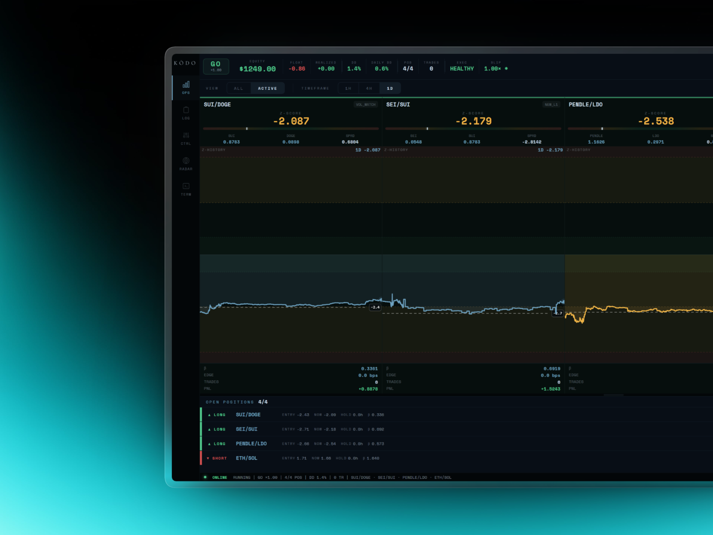
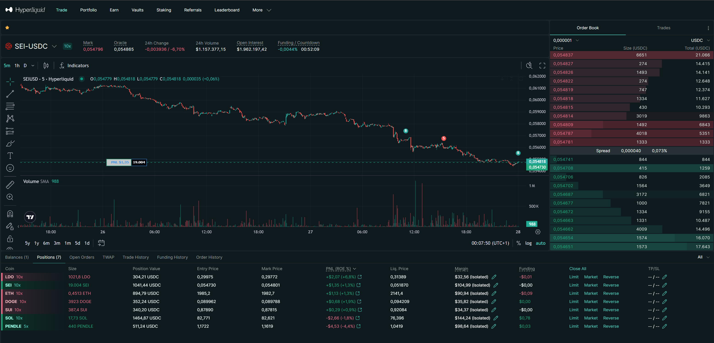
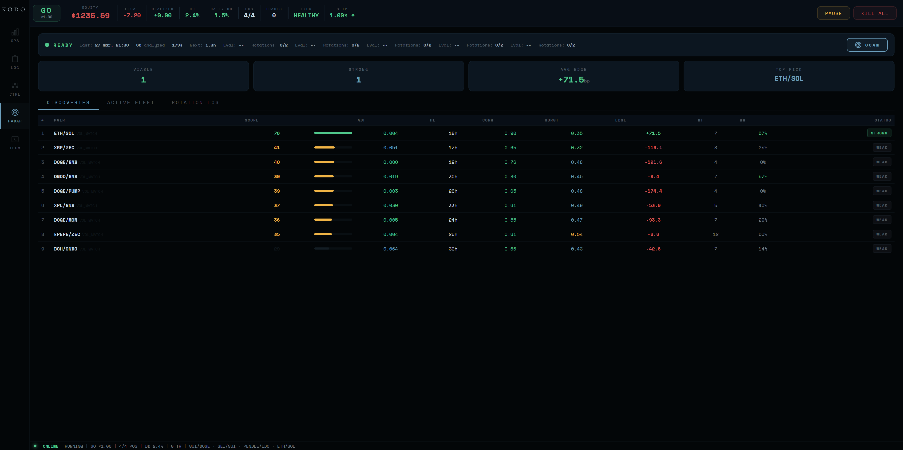
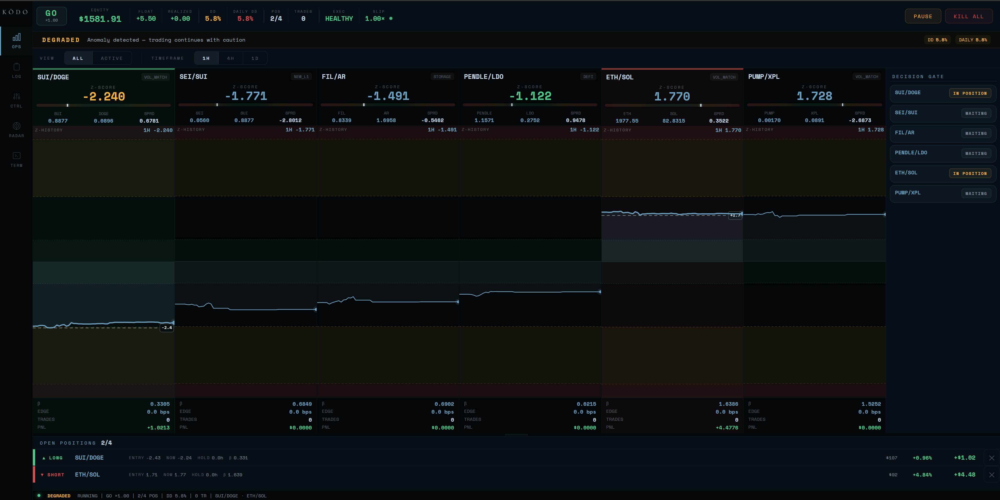
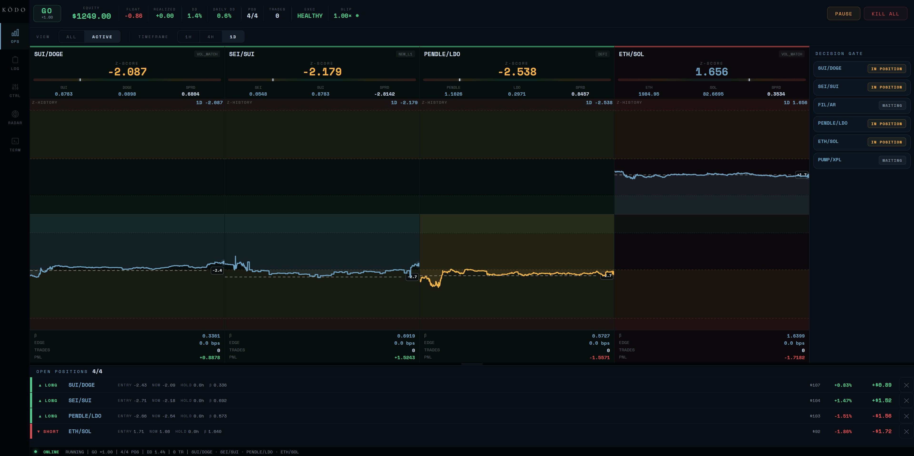
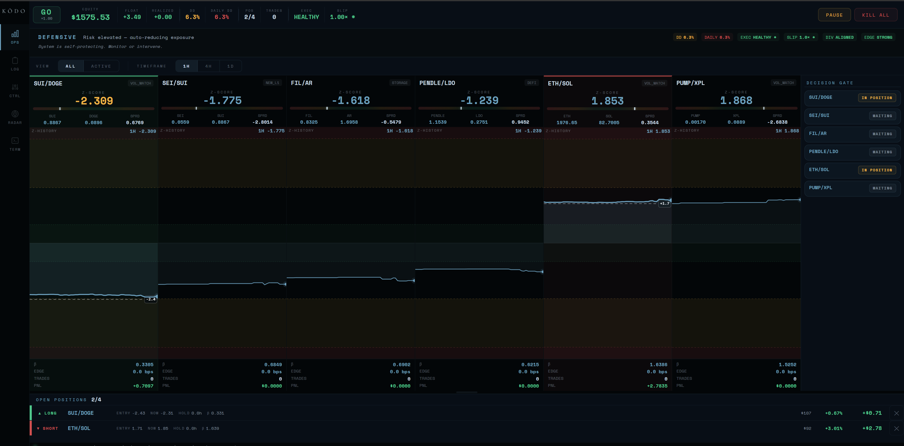
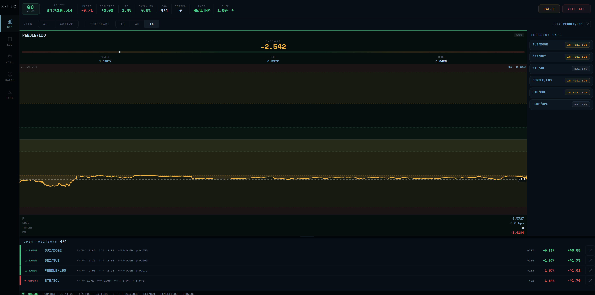
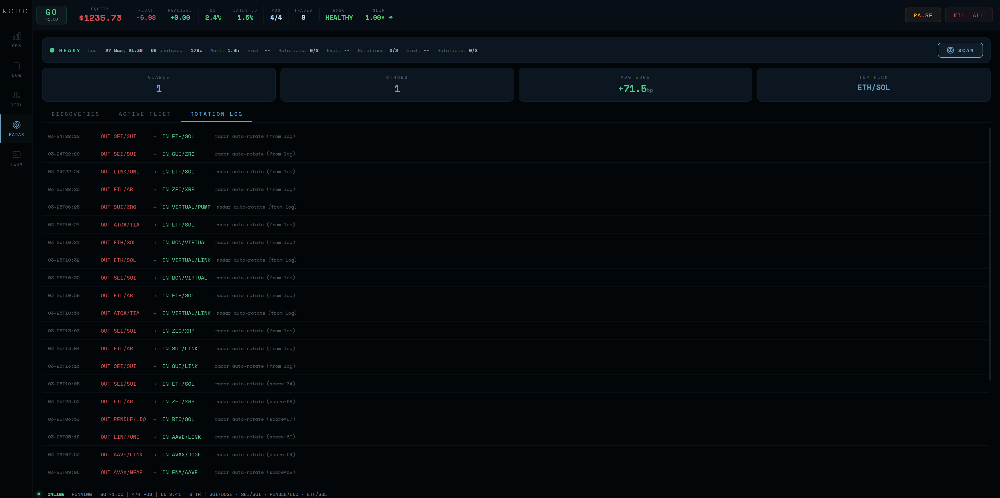

A decision system for operating under noise, incomplete information, and capital risk. Runs 24/7. Zero margin for error.
Autonomous statistical arbitrage across correlated crypto pairs on Hyperliquid (DeFi perpetuals DEX). Real capital, 7x leverage, 24/7 on-chain execution. I led product and design end-to-end: signal detection, validation cascade, risk escalation, execution logic, and two operator surfaces. Collaborated with quant specialists and leveraged Claude AI for accelerated development.

Mean-reversion on correlated crypto pairs.
Spread deviates beyond a statistical threshold, system trades the convergence. 24/7 crypto markets on Hyperliquid, a decentralised perpetuals exchange. 7x leverage, 7 simultaneous pairs (ETH/BTC, SOL/ETH, LINK/ETH, and other correlated tokens), non-stationary on-chain data. Every decision has immediate financial consequences for the client.
Scope: Decision architecture, interfaces, risk system
Platform: Hyperliquid (DeFi perps DEX, on-chain order book)
Stack: Python, Flask, Telegram Bot API, Web3 / REST APIs
Work: System design, dashboard, Telegram bot, risk framework
Collaboration: Quant specialists (signal model), Claude AI (development acceleration)
Live capital deployment. 7x leverage, 5 pairs max, 3 open positions max. ~60-second tick cycle. 24/7.

Hyperliquid: the decentralised perpetuals exchange where KODO executes.
v1 was a terminal log with 23 metrics per pair.
Complete information, zero decision clarity. At 2am with leveraged capital moving against the operator, the question isn't analytical — it's binary: "Am I okay right now?" The problem was never information. It was architecture.
- Signals are ambiguous by nature. Non-stationary on-chain data, regime shifts, correlation breakdowns across token pairs. In crypto, hesitation has a cost. Overreaction has a cost.
- Latency is structural. 60-second tick, rate-limited exchange APIs, two-leg execution on a decentralised order book. A signal valid 30 seconds ago may not be valid now. Blockchain finality adds another layer.
- Emotional bias compounds faster than losses. After a drawdown: impulse to recover. After a streak: impulse to increase size. Both destroy accounts.
Most systems fail not because of bad signals. They fail because of bad decision architecture.
The entire 23-metric pipeline needed to collapse into one question: what's the z-score? Entry at 2.4σ, exit at 0.8σ, stop at 4.5σ. At 2am, one glance. Not a lecture.
6-step signal pipeline. One number drives every decision: the z-score.
Four domains: Core, Data, Decision+Risk, Feedback+Interface. 12 modules.

The Pair Scanner: correlation, z-score, half-life, and funding rate across all pairs.
The radar scans 24/7. The operator only sees what matters.
The pair scanner evaluates every pair across four dimensions: correlation coefficient, z-score deviation, half-life, and funding rate differential. Only pairs passing all four filters surface to the operator.
Filter: Suppress weak correlation (<0.7), slow half-life (>48h), adverse funding.
Surface: Only z > 2.4 sigma appears actionable.
Rank: By deviation magnitude. Most urgent at top.

Full radar: 7 pairs monitored. Color-coded z-scores. One screen, not seven.
Three design interventions. From raw data to decision architecture.
1. Designed a 5-layer decision architecture
Signal emergence → validation → decision → execution → survival. Each layer has one responsibility.

Active state: 5 pairs, spread convergence in real-time. The system entered autonomously and manages toward exit.
2. Five-priority deterministic decision gate
The gate is deterministic. Same inputs, same output. No ambiguity. Higher priorities override everything below.
Drawdown escalation
3. Two operator surfaces: Dashboard + Telegram
Terminal Views
Telegram Command Tiers
95% of interaction is one question answered via Telegram. The 2am interface.

Override state: operator intervened. Risk parameters adjusted. System respects override but keeps monitoring.

Single pair deep view: full spread history, convergence trajectory.

Trade log: every entry, exit, P&L. Full accountability.
What trade-offs did I make?
Every decision involved choosing between flexibility and determinism under capital risk. These were the most consequential:
| Decision | Chosen | Rejected | Why |
|---|---|---|---|
| Gate logic | Deterministic cascade | Probabilistic model | Under capital risk, "73% confident" is not a useful post-mortem. Hard thresholds = complete traceability. |
| Kill switch | Sticky (manual reset + 10 recovery trades) | Auto-reset | Prevents re-entry after drawdown driven by emotional bias. |
| Primary surface | Telegram | Dashboard | 95% of interaction is "am I okay?" — phone notification answers it in 5 seconds. |
| Infrastructure | Local-only (no cloud) | Cloud deployment | Zero execution latency, complete runtime control. Third-party infra fails at worst possible moment. |
Three surfaces, one decision engine, zero gaps.
KODO operates across three interfaces: the Terminal (full dashboard for deep analysis), Telegram (mobile alerts and quick commands for 2am checks), and Hyperliquid (the on-chain execution layer). A single decision engine sits between all three, ensuring every surface shows the same truth.
KODO Terminal
Flask dashboard. 5 views: OPS (pair radar), LOG (trade history), CTRL (system state), RADAR (pair scanner), TERM (raw feed). Full override controls.
Telegram Bot
3 command tiers: Read (/status, /pairs), Write (/pause, /resume), Destructive (/kill with 2-step confirm). Push alerts for trades, risk events, errors. The 2am interface.
Hyperliquid DEX
On-chain perpetuals exchange. REST + WebSocket APIs. Order placement, position management, funding rate queries. The execution layer KODO talks to.
Pair Scanner
Scans all pairs every 60s. Filters by correlation (>0.7), half-life (<48h), funding rate. Ranks by z-score deviation.
Signal Gate
Deterministic. Entry: z > 2.4σ. Exit: z < 0.8σ. Stop-loss: z > 4.5σ. Same inputs always produce same output. Zero discretion.
Risk Manager
Position sizing based on account equity. Max 3 concurrent. Drawdown escalation: Normal (0-6%), Reduced (6-9%), Blocked (9-10%), Kill (>10%).
Executor
Two-leg order placement on Hyperliquid. Long leg + short leg. Slippage monitoring. Execution latency tracking per order.
Kill Switch
Priority 1. Sticky (manual reset only). Close all positions. Halt all new entries. 2-step confirmation via Telegram. Cannot be overridden by automation.
Price Feed
Hyperliquid WebSocket. 60-second aggregated ticks. Mid-price calculation. Rate-limit managed.
Spread Calculator
Log-price ratio between pair legs. Rolling window statistics. Kalman filter for noise reduction.
Z-Score Engine
Mean and standard deviation over rolling window. Non-stationary adjustment. The single number that drives every decision.
Funding Monitor
Rate differential between pair legs. Carry cost calculation. Adverse funding triggers pair suppression.
Reconciler
Runs every 5 ticks. Compares local state vs on-chain positions. Fixes phantom positions from network timeouts. Non-negotiable in DeFi.
System States
4 states: OPEN (normal ops), REDUCED (half size), BLOCKED (entries stopped), KILLED (all closed). Auto-escalation based on drawdown %.
Shadow Trader
Runs model in parallel without executing. Compares theoretical vs actual P&L. Divergence threshold: $0.30/trade. Flags model drift.
Edge Tracker
Decomposes trade-level P&L into signal edge, execution cost, slippage, and funding. Identifies which pairs actually produce alpha.
Position Limits
Max 3 concurrent positions. Max 5 pairs monitored. 7x leverage cap. Per-pair allocation proportional to edge score.
Trade Attribution
Every trade logged with: entry/exit z-scores, hold duration, P&L, slippage, funding cost, execution latency. Full accountability.
Parameter Tuning
Edge tracker data feeds back to signal model. Half-life windows adjusted. Entry/exit thresholds refined. Pairs added/removed based on real performance.
Cycle Restart
Updated model. Refined parameters. Cycle restarts every 60 seconds. The system that runs today is better than the one that ran yesterday.